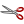
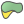

Docs for ‘QGIS testing’. Visit http://docs.qgis.org/2.14 for QGIS 2.14 docs and translations.
Editing¶
QGIS supports various capabilities for editing OGR, SpatiaLite, PostGIS, MSSQL Spatial and Oracle Spatial vector layers and tables.
Note
The procedure for editing GRASS layers is different - see section Digitizing and editing a GRASS vector layer for details.
Tip
Concurrent Edits
This version of QGIS does not track if somebody else is editing the same feature at the same time as you are. The last person to save its edits wins.
Setting the Snapping Tolerance and Search Radius¶
For an optimal and accurate edit of the vector layer geometries, we need to set an appropriate value of snapping tolerance and search radius for features vertices.
Snapping tolerance¶
Snapping tolerance is the distance QGIS uses to search for the closest vertex and/or segment you are trying to connect to when you set a new vertex or move an existing vertex. If you aren’t within the snapping tolerance, QGIS will leave the vertex where you release the mouse button, instead of snapping it to an existing vertex and/or segment. The snapping tolerance setting affects all tools that work with tolerance.
- A general, project-wide snapping tolerance can be defined by choosing
Settings ‣
 Options...,
Digitizing tab.
You can select between ‘To vertex’, ‘To segment’ or ‘To vertex and segment’
as default snap mode. You can also define a default snapping tolerance and
a search radius for vertex edits. The tolerance can be set either in map
units or in pixels. The advantage of choosing pixels is that the snapping
tolerance doesn’t have to be changed after zoom operations. In our small
digitizing project (working with the Alaska dataset), we define the
snapping units in feet. Your results may vary, but something on the order
of 300 ft at a scale of 1:10000 should be a reasonable setting.
Options...,
Digitizing tab.
You can select between ‘To vertex’, ‘To segment’ or ‘To vertex and segment’
as default snap mode. You can also define a default snapping tolerance and
a search radius for vertex edits. The tolerance can be set either in map
units or in pixels. The advantage of choosing pixels is that the snapping
tolerance doesn’t have to be changed after zoom operations. In our small
digitizing project (working with the Alaska dataset), we define the
snapping units in feet. Your results may vary, but something on the order
of 300 ft at a scale of 1:10000 should be a reasonable setting. - A layer-based snapping tolerance that overrides the global snapping options
can be defined by choosing Settings ‣ Snapping options.
It enables and adjusts snapping mode
and tolerance on a layer basis (see figure_edit_1 ). This dialog offers
three different modes to select the layer(s) to snap to:
- Current layer: only the active layer is used, a convenient way to ensure topology within the layer being edited
- All layers: a quick and simple setting for all visible layers in the project so that the pointer snaps to all vertices and/or segments. In most cases it is sufficient to use this snapping mode.
- Advanced: if you need to edit a layer and snap its vertices to another layer, ensure the target layer is checked and increase the snapping tolerance to a greater value. Furthermore, snapping will never occur to a layer that is not checked in the snapping options dialog, regardless of the global snapping tolerance. So be sure to mark the checkbox for those layers that you need to snap to.
Figure Edit 1:
Edit snapping options on a layer basis (Advanced mode)
Tip
Control the list of layers to snap
The Snapping Options dialog is by default populated with parameters (mode, tolerance, units) set in the global Digitizing tab. To avoid layers being checked by default in the Advanced mode and hence set snappable, define the Default Snap mode to Off.
Snapping tolerance can be set in pixels or map units (the units of the map view). While in the Advanced layer selection mode, it is possible to use a snapping tolerance that refers to layer units, the units of the reprojected layer when ‘on-the-fly’ CRS transformation is on.
Search radius¶
Search radius is the distance QGIS uses to search for the closest vertex you are trying to select when you click on the map. If you aren’t within the search radius, QGIS won’t find and select any vertex for editing. Snap tolerance and search radius are set in map units or pixels, so you may find you need to experiment to get them set right. If you specify too big of a tolerance, QGIS may snap to the wrong vertex, especially if you are dealing with a large number of vertices in close proximity. Set search radius too small, and it won’t find anything to move.
The search radius for vertex edits in layer units can be defined in the
Digitizing tab under Settings ‣
Options. This is the same place where you define the general,
project-wide snapping tolerance.
Topological editing¶
Besides layer-based snapping options, you can also define topological
functionalities in the Snapping options... dialog in the
Settings (or File) menu. Here, you can
define  Enable topological editing, and/or for polygon
layers, activate the Avoid Intersections option.
Enable topological editing, and/or for polygon
layers, activate the Avoid Intersections option.
Enable topological editing¶
The option Enable topological editing is for editing
and maintaining common boundaries in features mosaics. QGIS ‘detects’
shared boundary by the features, so you only have to move a common vertex/segment
once, and QGIS will take care of updating the neighboring features.
Avoid intersections of new polygons¶
A second topological option called Avoid intersections
prevents you to draw new features that overlap an existing one.
It is for quicker digitizing of adjacent
polygons. If you already have one polygon, it is possible with this option
to digitize the second one such that both intersect, and QGIS then cuts the
second polygon to the boundary of the existing one. The advantage is that you
don’t have to digitize all vertices of the common boundary.
Note
If the new geometry is totally covered by existing ones, it gets cleared and the new feature will have no geometry when allowed by the provider, otherwise saving modifications will make QGIS pop-up an error message.
Warning
Use cautiously the Avoid Intersections option
Because the option cuts or clears geometry of any overlaping feature from any polygon layer, do not forget to uncheck this option once you no longer need it otherwise, you can get unexpected geometries.
Enable snapping on intersections¶
Another option is to use Enable snapping on intersection.
It allows you to snap on an intersection of background layers, even if there’s no vertex on
the intersection.
Geometry Checker¶
A core plugin can help the user to find the geometry invalidity. You can find more information on this plugin at Geometry Checker Plugin.
Digitizing an existing layer¶
By default, QGIS loads layers read-only. This is a safeguard to avoid accidentally editing a layer if there is a slip of the mouse. However, you can choose to edit any layer as long as the data provider supports it, and the underlying data source is writable (i.e., its files are not read-only).
In general, tools for editing vector layers are divided into a digitizing and an advanced digitizing toolbar, described in section Advanced digitizing. You can select and unselect both under View ‣ Toolbars ‣. Using the basic digitizing tools, you can perform the following functions:
| Icon | Purpose | Icon | Purpose |
|---|---|---|---|
 |
Current edits |  |
Toggle editing |
 |
Add Feature: Capture Point |  |
Add Feature: Capture Line |
 |
Add Feature: Capture Polygon |  |
Move Feature |
| Add Circular String | Add Circular String By Radius | ||
 |
Node Tool | Delete Selected | |
|  | Cut Features |  |
Copy Features |
| Paste Features |  |
Save layer edits |
{kind=link}
{kind=link}
{kind=link}
{kind=link}
{kind=link}
Table Editing: Vector layer basic editing toolbar
Note that while using any of the digitizing tools, you can still zoom or pan in the map canvas without losing the focus on the tool.
All editing sessions start by choosing the Toggle editing
option found in the context menu of a given layer, from the attribute table dialog, the
digitizing toolbar or the Edit menu.
Once the layer is in edit mode, additional tool buttons on the editing toolbar will become available and markers will appear at the vertices of all features unless Show markers only for selected features option under Settings ‣ Options... ‣ Digitizing menu is checked.
Tip
Save Regularly
Remember to Save Layer Edits regularly. This will also
check that your data source can accept all the changes.
Adding Features¶
You can use the Add Feature,
Add Feature or
Add Feature icons on the toolbar to add new feature (point, line and
polygon) into the current layer.
The next buttons Add circular string or Add circular string by radius allow users to add line or polygon features with a circular geometry.
To create features with these tools, you first digitize the geometry then enter its attributes. To digitize the geometry, left-click on the map area to create the first point of your new feature.
For linear or curved geometries, keep on left-clicking for each additional point you wish to capture or use automatic tracing capability to accelerate the digitization. You can switch back and forth between linear Add feature tool and curved Add circular string... tools to create compound curved geometry. Pressing Delete or Backspace key reverts the last node you add. When you have finished adding points, right-click anywhere on the map area to confirm you have finished entering the geometry of that feature.
Note
Curved geometries are stored as such only in compatible data provider
Although QGIS allows to digitize curved geometries within any editable data format, you need to be using a data provider (e.g. PostGIS, GML or WFS) that supports curves to have features stored as curved, otherwise QGIS segmentizes the circular arcs. The memory layer provider also supports curves.
Tip
Customize the digitizing rubber band
While capturing polygon, the by-default red rubber band can hide underlying features or places you’d like to capture a point. This can be fixed by setting a lower opacity (or alpha channel) to the rubber band’s Fill Color in Settings ‣ Options ‣ Digitizing menu. You can also avoid the use of the rubber band by checking Don’t update rubber band during node editing.
The attribute window will appear, allowing you to enter the information for the new feature. Figure_edit_2 shows setting attributes for a fictitious new river in Alaska. However, in the Digitizing menu under the Settings ‣ Options menu, you can also activate:
- Suppress attributes pop-up windows after each created
feature to avoid the form opening
- or Reuse last entered attribute values to have fields
automatically filled at the opening of the form and just have to type changing values.
Figure Edit 2:
Enter Attribute Values Dialog after digitizing a new vector feature
With the Move Feature(s) icon on the toolbar, you can
move existing features.
Node Tool¶
For shapefile-based or MapInfo layers as well as SpatiaLite, PostgreSQL/PostGIS,
MSSQL Spatial, and Oracle Spatial tables, the
Node Tool provides manipulation capabilities of
feature vertices similar to CAD programs. It is possible to simply select
multiple vertices at once and to move, add or delete them altogether.
The node tool also works with ‘on the fly’ projection turned on and supports
the topological editing feature. This tool is, unlike other tools in
QGIS, persistent, so when some operation is done, selection stays
active for this feature and tool.
It is important to set the property Settings ‣
Options ‣ Digitizing ‣ Search Radius:
 to a number greater than zero. Otherwise, QGIS will
not be able to tell which vertex is being edited and will display a warning.
to a number greater than zero. Otherwise, QGIS will
not be able to tell which vertex is being edited and will display a warning.
Tip
Vertex Markers
The current version of QGIS supports three kinds of vertex markers:
‘Semi-transparent circle’, ‘Cross’ and ‘None’. To change the marker style,
choose Options from the
Settings menu, click on the Digitizing
tab and select the appropriate entry.
Basic operations¶
Start by activating the Node Tool and selecting a
feature by clicking on it. Red boxes will appear at each vertex of this feature.
- Selecting vertices: You can select vertices by clicking on them one at a time, by clicking on an edge to select the vertices at both ends, or by clicking and dragging a rectangle around some vertices. When a vertex is selected, its color changes to blue. To add more vertices to the current selection, hold down the Ctrl key while clicking. Hold down Ctrl when clicking to toggle the selection state of vertices (vertices that are currently unselected will be selected as usual, but also vertices that are already selected will become unselected).
- Adding vertices: To add a vertex, simply double click near an edge and a new vertex will appear on the edge near to the cursor. Note that the vertex will appear on the edge, not at the cursor position; therefore, it should be moved if necessary.
- Deleting vertices: Select the vertices and click the Delete key. Deleting all the vertices of a feature generates, if compatible with the datasource, a geometryless feature. Note that this doesn’t delete the complete feature, just the geometry part; To delete a complete feature use the Delete Selected tool.
- Moving vertices: Select all the vertices you want to move, click on a selected vertex or edge and drag in the direction you wish to move. All the selected vertices will move together. If snapping is enabled, the whole selection can jump to the nearest vertex or line.
Each change made with the node tool is stored as a separate entry in the Undo dialog. Remember that all operations support topological editing when this is turned on. On-the-fly projection is also supported, and the node tool provides tooltips to identify a vertex by hovering the pointer over it.
Tip
Move features with precision
The Move Feature tool doesn’t currently allow to
snap features while moving. Using the Node Tool, select ALL
the vertices of the feature, click a vertex, drag and snap it to a target vertex:
the whole feature is moved and snapped to the other feature.
The Vertex Editor¶
With activating the Node Tool on a feature, QGIS opens the Vertex Editor panel listing all the vertices of the feature with their x, y (z, m if applicable) coordinates and r (for the radius, in case of circular geometry). Simply select a row in the table does select the corresponding vertex in the map canvas, and vice versa. Simply change a coordinate in the table and your vertex position is updated. You can also select multiple rows and delete them altogether.
Figure Edit 3:
Vertex editor panel showing selected nodes
Cutting, Copying and Pasting Features¶
Selected features can be cut, copied and pasted between layers in the same
QGIS project, as long as destination layers are set to
Toggle editing beforehand.
Tip
Transform polygon into line and vice-versa using copy/paste
Copy a line feature and paste it in a polygon layer: QGIS pastes in the target layer a polygon whose boundary corresponds to the closed geometry of the line feature. This is a quick way to generate different geometries of the same data.
Features can also be pasted to external applications as text. That is, the features are represented in CSV format, with the geometry data appearing in the OGC Well-Known Text (WKT) format. WKT features from outside QGIS can also be pasted to a layer within QGIS.
When would the copy and paste function come in handy? Well, it turns out that you can edit more than one layer at a time and copy/paste features between layers. Why would we want to do this? Say we need to do some work on a new layer but only need one or two lakes, not the 5,000 on our big_lakes layer. We can create a new layer and use copy/paste to plop the needed lakes into it.
As an example, we will copy some lakes to a new layer:
- Load the layer you want to copy from (source layer)
- Load or create the layer you want to copy to (target layer)
- Start editing for target layer
- Make the source layer active by clicking on it in the legend
- Use the Select Features by area or single click tool to select the feature(s) on the source layer
- Click on the Copy Features tool
- Make the destination layer active by clicking on it in the legend
- Click on the Paste Features tool
- Stop editing and save the changes
{kind=link}
What happens if the source and target layers have different schemas (field names and types are not the same)? QGIS populates what matches and ignores the rest. If you don’t care about the attributes being copied to the target layer, it doesn’t matter how you design the fields and data types. If you want to make sure everything - the feature and its attributes - gets copied, make sure the schemas match.
Note
Congruency of Pasted Features
If your source and destination layers use the same projection, then the pasted features will have geometry identical to the source layer. However, if the destination layer is a different projection, then QGIS cannot guarantee the geometry is identical. This is simply because there are small rounding-off errors involved when converting between projections.
Tip
Copy string attribute into another
If you have created a new column in your attribute table with type ‘string’ and want to paste values from another attribute column that has a greater length the length of the column size will be extended to the same amount. This is because the GDAL Shapefile driver starting with GDAL/OGR 1.10 knows to auto-extend string and integer fields to dynamically accommodate for the length of the data to be inserted.
Deleting Selected Features¶
If we want to delete an entire feature (attribute and geometry), we can do that by first selecting the geometry using the regular Select Features by area or single click tool. Selection can also be done from the attribute table. Once you have the selection set, press Delete or Backspace key or use the Delete Selected tool to delete the features. Multiple selected features can be deleted at once.
The Cut Features tool on the digitizing toolbar can also be used to delete features. This effectively deletes the feature but also places it on a “spatial clipboard”. So, we cut the feature to delete. We could then use the Paste Features tool to put it back, giving us a one-level undo capability. Cut, copy, and paste work on the currently selected features, meaning we can operate on more than one at a time.
Saving Edited Layers¶
When a layer is in editing mode, any changes remain in the memory of QGIS.
Therefore, they are not committed/saved immediately to the data source or disk.
If you want to save edits to the current layer but want to continue editing
without leaving the editing mode, you can click the
Save Layer Edits button. When you turn editing mode off with
Toggle editing (or quit QGIS for that matter),
you are also asked if you want to save your changes or discard them.
If the changes cannot be saved (e.g., disk full, or the attributes have values that are out of range), the QGIS in-memory state is preserved. This allows you to adjust your edits and try again.
Tip
Data Integrity
It is always a good idea to back up your data source before you start editing. While the authors of QGIS have made every effort to preserve the integrity of your data, we offer no warranty in this regard.
Saving multiple layers at once¶
This feature allows the digitization of multiple layers. Choose
 Save for Selected Layers to save all changes you
made in multiple layers. You also have the opportunity to
Rollback for Selected Layers, so that the
digitization may be withdrawn for all selected layers.
If you want to stop editing the selected layers, Cancel
for Selected Layer(s) is an easy way.
Save for Selected Layers to save all changes you
made in multiple layers. You also have the opportunity to
Rollback for Selected Layers, so that the
digitization may be withdrawn for all selected layers.
If you want to stop editing the selected layers, Cancel
for Selected Layer(s) is an easy way.
{kind=link}
{kind=link}
The same functions are available for editing all layers of the project.
Advanced digitizing¶
| Icon | Purpose | Icon | Purpose |
|---|---|---|---|
 |
Enable Advanced Digitizing Tools | Enable Tracing | |
 |
Undo |  |
Redo |
| Rotate Feature(s) |  |
Simplify Feature | |
 |
Add Ring |  |
Add Part |
| Fill Ring |  |
Delete Ring | |
 |
Delete Part |  | Reshape Features |
 |
Offset Curve |  |
Split Features |
| Split Parts |  |
Merge Selected Features | |
 |
Merge Attributes of Selected Features |  |
Rotate Point Symbols |
{kind=link}
{kind=link}
{kind=link}
{kind=link}
{kind=link}
Table Advanced Editing: Vector layer advanced editing toolbar
Undo and Redo¶
The Undo and Redo tools allows you
to undo or redo vector editing operations. There is also a dockable
widget, which shows all operations in the undo/redo history (see
Figure_edit_4). This widget is not displayed by default; it can be
displayed by right clicking on the toolbar and activating the Undo/Redo
checkbox. Undo/Redo is however active, even if the widget is not displayed.
Figure Edit 4:
Redo and Undo digitizing steps
When Undo is hit or Ctrl+z (or Cmd+z) pressed, the state of all features and attributes are reverted to the state before the reverted operation happened. Changes other than normal vector editing operations (for example, changes done by a plugin) may or may not be reverted, depending on how the changes were performed.
To use the undo/redo history widget, simply click to select an operation in the history list. All features will be reverted to the state they were in after the selected operation.
Rotate Feature(s)¶
Use Rotate Feature(s) to rotate one or multiple features in the map canvas. Press the Rotate Feature(s) icon and then click on the feature to rotate. Either click on the map to place the rotated feature or enter an angle in the user input widget. If you want to rotate several features, they shall be selected first.
If you enable the map tool with feature(s) selected, its (their) centroid appears and will be the rotation anchor point. If you want to move the anchor point, hold the Ctrl button and click on the map to place it.
If you hold Shift before clicking on the map, the rotation will be done in 45 degree steps, which can be modified afterwards in the user input widget.
To abort feature rotation, you need to click on Rotate Feature(s) icon.
Simplify Feature¶
The Simplify Feature tool allows you to reduce the
number of vertices of a feature, as long as the geometry remains valid. With the
tool you can also simplify many features at once or multi-part features.
First, click on the feature or drag a rectangle over the features. A dialog where you can define a tolerance in map units, layer units or pixels pops up and a colored and simplified copy of the feature(s), using the given tolerance, appears over them. QGIS calculates the amount of vertices that can be deleted while maintaining the geometry. The higher the tolerance is the more vertices can be deleted. When the expected geometry fits your needs just click the [OK] button. The tolerance you used will be saved when leaving a project or when leaving an edit session. So you can go back to the same tolerance the next time when simplifying a feature.
To abort feature simplification, you need to click on
Simplify Feature icon.
Note
unlike the feature simplification option in Settings ‣
Options ‣ Rendering menu which simplifies the geometry just for rendering,
the Simplify Feature tool really modifies feature’s
geometry in data source.
Add Part¶
You can Add Part to a selected feature generating a
multipoint, multiline or multipolygon feature. The
new part must be digitized outside the existing one which should be selected
beforehand.
The Add Part can also be used to add a geometry to a geometryless
feature. First, select the feature in the attribute table and digitize the new geometry
with the Add Part tool.
Delete Part¶
The Delete Part tool allows you to delete parts from
multifeatures (e.g., to delete polygons from a multi-polygon feature). This
tool works with all multi-part geometries: point, line and polygon. Furthermore,
it can be used to totally remove the geometric component of a feature.
To delete a part, simply click within the target part.
Add Ring¶
You can create ring polygons using the
Add Ring icon in the toolbar. This means that inside an existing area, it
is possible to digitize further polygons that will occur as a ‘hole’, so
only the area between the boundaries of the outer and inner polygons remains
as a ring polygon.
Fill Ring¶
You can use the Fill Ring function to add a ring to
a polygon and add a new feature to the layer at the same time. Using this tool,
you simply have to digitize a polygon within an existing one. Thus you need not
first use the Add Ring icon and then the
Add feature function anymore.
Delete Ring¶
The Delete Ring tool allows you to delete rings within
an existing polygon, by clicking inside the hole. This tool only works with
polygon and multi-polygon features. It doesn’t
change anything when it is used on the outer ring of the polygon.
Reshape Features¶
You can reshape line and polygon features using the Reshape Features icon on the toolbar. For lines, it replaces the line part from the first to the last intersection with the original line. The Reshape Features tool also helps you extend linestring geometries: simply begin or end the reshape line at either the first or last point of the existing line.
You can also edit the boundary of a polygon with this tool. First, click in the inner area of the polygon next to the point where you want to add a new vertex. Then, cross the boundary and add the vertices outside the polygon. To finish, right-click in the inner area of the polygon. The tool will automatically add a node where the new line crosses the border. The area of the polygon is expanded with the area you draw. It is also possible to remove part of the area from the polygon, starting the new line outside the polygon, adding vertices inside, and ending the line outside the polygon with a right click.
With polygons, reshaping can sometimes lead to unintended results. It is mainly useful to replace smaller parts of a polygon, not for major overhauls, and the reshape line is not allowed to cross several polygon rings, as this would generate an invalid polygon.
Note
The reshape tool may alter the starting position of a polygon ring or a closed line. So, the point that is represented ‘twice’ will not be the same any more. This may not be a problem for most applications, but it is something to consider.
Offset Curves¶
The Offset Curve tool creates parallel shifts of line layers.
The tool can be applied to the edited layer (the geometries are modified)
or also to background layers (in which case it creates copies of the lines /
rings and adds them to the edited layer).
It is thus ideally suited for the creation of distance line layers.
The User Input dialog pops-up, showing the displacement distance.
To create a shift of a line layer, you must first go into editing mode and activate the
Offset Curve tool. Then click on a feature to shift it.
Move the mouse and click where wanted or enter the desired distance in the user
input widget. Your changes may then be saved with the Save Layer Edits tool.
QGIS options dialog (Digitizing tab then Curve offset tools section) allows you to configure some parameters like Join style, Quadrant segments, Miter limit.
Split Features¶
You can split features using the Split Features
icon on the toolbar. Just draw a line across the feature you want to split.
Split parts¶
In QGIS it is possible to split the parts of a multi part feature so that the number of parts is increased. Just draw a line across the part you want to split using the Split Parts icon.
Merge selected features¶
The Merge Selected Features tool allows you to merge
features. A new dialog will allow you to choose which value to choose between each
selected features or select a function (Minimum, Maximum, Median, Sum, Skip
Attribute) to use for each column. If features don’t have a common boundaries,
a multipolygon will be created.
Merge attributes of selected features¶
The Merge Attributes of Selected Features tool
allows you to apply same attributes to features without merging their boundaries.
First, select several features. Then
press the Merge Attributes of Selected Features button.
Now QGIS asks you which attributes are to be applied to all selected objects.
As a result, all selected objects have the same attribute entries.
Rotate Point Symbols¶
Rotate Point Symbols allows you to change the rotation
of point symbols in the map canvas. You must first define a rotation column
from the attribute table of the point layer in the Advanced menu of the
Style menu of the Layer Properties. Also, you will need to
go into the ‘SVG marker’ and choose Data defined properties ....
Activate Angle and choose ‘rotation’ as field.
Without these settings, the tool is inactive.
Figure Edit 5:
Rotate Point Symbols
To change the rotation, select a point feature in the map canvas and rotate it, holding the left mouse button pressed. A red arrow with the rotation value will be visualized (see Figure_edit_5). When you release the left mouse button again, the value will be updated in the attribute table.
Note
If you hold the Ctrl key pressed, the rotation will be done in 15 degree steps.
Automatic Tracing¶
Usually, when using capturing map tools (add feature, add part, add ring, reshape and split), you need to click each vertex of the feature.
Using the automatic tracing mode you can speed up the digitization process. Enable the Tracing tool by pushing the icon or pressing t key and snap to a vertex or segment of a feature you want to trace along. Move the mouse over another vertex or segment you’d like to snap and instead of an usual straight line, the digitizing rubber band represents a path from the last point you snapped to the current position. QGIS actually uses the underlying features topology to build the shortest path between the two points. Click and QGIS places the intermediate vertices following the path. You no longer need to manually place all the vertices during digitization.
Tracing requires snapping to be activated in traceable layers to build the path. You should also snap to an existing vertex or segment while digitizing and ensure that the two nodes are topologically connectable following existing features, otherwise QGIS is unable to connect them and thus traces a single straight line.
Note
Adjust map scale or snapping settings for an optimal tracing
If there are too many features in map display, tracing is disabled to avoid potentially long tracing structure preparation and large memory overhead. After zooming in or disabling some layers the tracing is enabled again.
Tip
Quickly enable or disable automatic tracing by pressing t key
By pressing t key, tracing can be enabled/disabled anytime even while digitizing one feature, so it is possible to digitize some parts of the feature with tracing enabled and other parts with tracing disabled. Tools behave as usual when tracing is disabled.
The Advanced Digitizing panel¶
When capturing new geometries or geometry parts you also have the possibility to use the Advanced Digitizing panel. You can digitize lines exactly parallel or at a specific angle or lock lines to specific angles. Furthermore you can enter coordinates directly so that you can make a precise definition for your new geometry.
Figure Advanced Edit 1:
The Advanced Digitizing panel
Note
The tools are not enabled if the map view is in geographic coordinates.
Creating new Vector layers¶
QGIS allows you to create new shapefile layers, new SpatiaLite layers, new GPX layers and New Temporary Scratch Layers. Creation of a new GRASS layer is supported within the GRASS plugin. Please refer to section Creating a new GRASS vector layer for more information on creating GRASS vector layers.
Creating a new Shapefile layer¶
To create a new shape layer for editing, choose New ‣ New Shapefile Layer... from the Layer menu. The New Vector Layer dialog will be displayed as shown in Figure_edit_6. Choose the type of layer (point, line or polygon) and the CRS (coordinate reference system).
{kind=link}
Note that QGIS does not yet support creation of 2.5D features (i.e., features with X,Y,Z coordinates).
Figure Edit 6:
Creating a new Shapefile layer Dialog
To complete the creation of the new shapefile layer, add the desired attributes
by clicking on the [Add to attributes list] button and specifying a name and type for the
attribute. A first ‘id’ column is added as default but can be removed, if not
wanted. Only Type: real  , Type: integer
, Type: string and Type:date
attributes are supported. Additionally and according to the attribute type, you can also define
the width and precision of the new attribute column. Once you are happy with
the attributes, click [OK] and provide a name for the shapefile. QGIS will
automatically add a .shp extension to the name you specify. Once the
layer has been created, it will be added to the map, and you can edit it in the
same way as described in section Digitizing an existing layer above.
, Type: integer
, Type: string and Type:date
attributes are supported. Additionally and according to the attribute type, you can also define
the width and precision of the new attribute column. Once you are happy with
the attributes, click [OK] and provide a name for the shapefile. QGIS will
automatically add a .shp extension to the name you specify. Once the
layer has been created, it will be added to the map, and you can edit it in the
same way as described in section Digitizing an existing layer above.
Creating a new SpatiaLite layer¶
To create a new SpatiaLite layer for editing, choose New ‣ New SpatiaLite Layer... from the Layer menu. The New SpatiaLite Layer dialog will be displayed as shown in Figure_edit_7.
{kind=link}
Figure Edit 7:

Creating a New SpatiaLite layer Dialog
The first step is to select an existing SpatiaLite database or to create a new
SpatiaLite database. This can be done with the browse button  to
the right of the database field. Then, add a name for the new layer, define
the layer type, and specify the coordinate reference system with [Specify CRS].
If desired, you can select Create an autoincrementing primary key.
to
the right of the database field. Then, add a name for the new layer, define
the layer type, and specify the coordinate reference system with [Specify CRS].
If desired, you can select Create an autoincrementing primary key.
To define an attribute table for the new SpatiaLite layer, add the names of the attribute columns you want to create with the corresponding column type, and click on the [Add to attribute list] button. Once you are happy with the attributes, click [OK]. QGIS will automatically add the new layer to the legend, and you can edit it in the same way as described in section Digitizing an existing layer above.
Further management of SpatiaLite layers can be done with the DB Manager. See DB Manager Plugin.
Creating a new GPX layer¶
To create a new GPX file, you need to load the GPS plugin first. Plugins ‣
 Plugin Manager... opens the Plugin Manager Dialog.
Activate the GPS Tools checkbox.
Plugin Manager... opens the Plugin Manager Dialog.
Activate the GPS Tools checkbox.
When this plugin is loaded, choose New ‣  Create new GPX Layer... from the Layer menu.
In the Save new GPX file as dialog, you can choose where to save the
new GPX layer.
Create new GPX Layer... from the Layer menu.
In the Save new GPX file as dialog, you can choose where to save the
new GPX layer.
Creating a new Temporary Scratch Layer¶
Empty, editable memory layers can be defined using Layer ‣
Create Layer ‣ New Temporary Scratch Layer. Here you can even create
 Multipoint, Multiline
and Multipolygon Layers beneath
Multipoint, Multiline
and Multipolygon Layers beneath  Point,
Line and Polygon Layers.
Temporary Scratch Layers are not saved and will be discarded when QGIS is closed.
See also Paste into new layer.
Point,
Line and Polygon Layers.
Temporary Scratch Layers are not saved and will be discarded when QGIS is closed.
See also Paste into new layer.